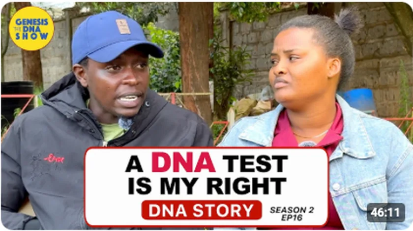
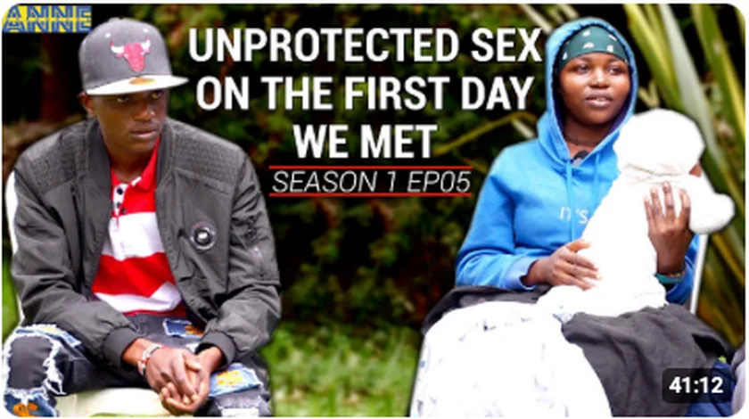
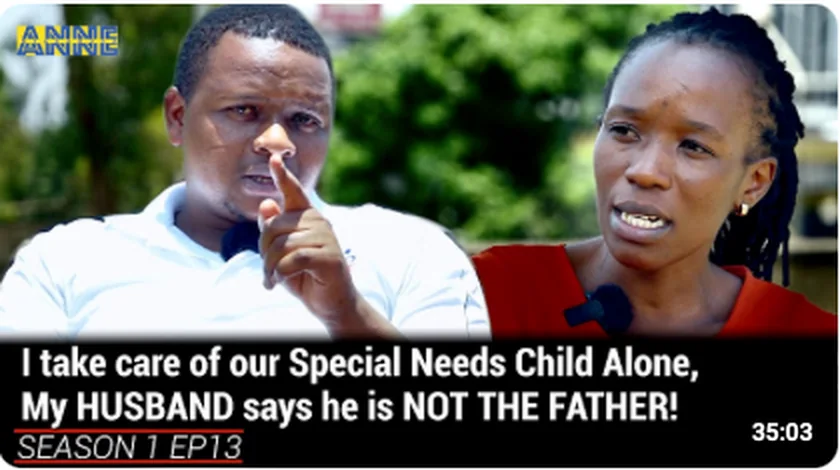

Watch Genesis DNA
These videos are hosted on our official YouTube channel.
High School Pregnancy, Paternity Drama
Season 1 · Episode 7
My Husband of 5 Years Is In Doubt
Genesis DNA Reality Show
Featured stories
A selection of the stories audiences have watched and discussed on Genesis DNA.

She said I’m just a “Sperm Donor”
Paternity doubt collides with questions of fatherhood and responsibility.

High School Pregnancy, Paternity Drama
A young family looks to DNA to settle a difficult question.

Both are married — and paternity is in doubt
An affair becomes the centre of a paternity dispute.

“A DNA test is my right”
A participant pushes for scientific clarity amid family disagreement.

“Unprotected sex on the first day we met”
A relationship origin story leads to unresolved paternity doubt.

“My husband says he is not the father”
A mother caring for a special-needs child seeks answers about paternity.
A growing community following the truth.
Genesis DNA has built a large YouTube audience around paternity stories, family conversations and DNA education. The channel now has more than 19,000 subscribers and hundreds of videos.